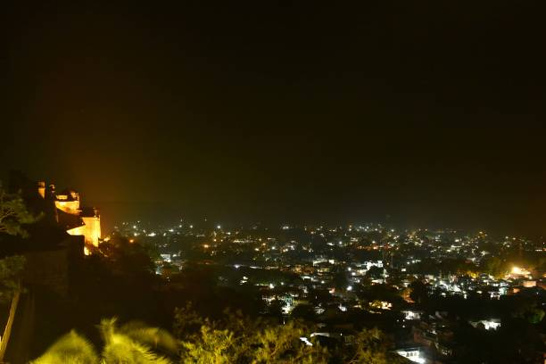

ABOUT

Chanderi is a small 11th century town located in northern part of Madhya Pradesh. It is known for its quaint forts, hills and elegant hand-woven Chanderi sarees. This six yard of piece is adorned around the globe for the artistry behind their creation. There is a variety of weaves you will find here, from Chanderi cotton-silk to pure Chanderi silk, and every weave is exemplary in its self.
The town will not only leave you spellbound with its weaving industry but also with its regal radiance! There is a rich history remains in its heritage sites of Chanderi Fort, Badal Mahal, and Koshak Mahal which you can admire on a visit to this quint city.
The Chanderi Fort dates back to the Mughal times, ruled by differed monarchs. It can be approached through three very famous gates. The main gate is known as 'Khooni Darwaza' because the criminals from battlements were thrown from the above. Another gate is 'Hawa Pur' which is the third and highest gate of the Fort. The southwest- side of the fort has a gate called the 'Kati-Ghati'. Another place to visit in Chanderi is the Badal Mahal Gate is a singular structure of a gate that doesn't lead to any palace. It is situated at the Southern end, facing the Jama Masjid, it offers a striking view of the fort above. The Gate has a height of 100 feet and the structure features intricate carvings and remarkable motifs.